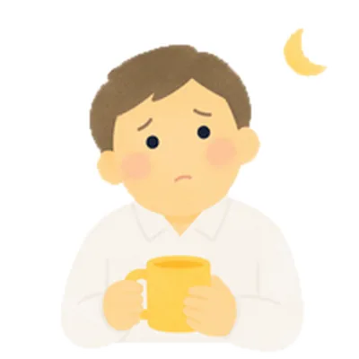

練習相手が、
実務経験で
答えこの
キャリア
この
本番の
答え

サニー先生受ける
オブザーバーは
この
ロールプレイは、
相手役と、
この
申込み
2027年1月から、
申込みの
申込みと
参加費と
参加費
5,000円
1人・
いつ
1月から
（予定）
第34回の
どこで
オンライン
家から
時間
20:00〜22:00
（2時間）
曜日は
よく

練習相手が、
実務経験で
答えこの

人に
指導する
答え公表されている

オンラインの
講座が
答え面接は

くわしく
モヤンオブザーバーって、

オブザーバーは、現役の
1
受ける
もう
その

くわしく
第34回の
| 3/12 | 3/13 | 3/14 | 3/20 | 3/21 | 3/22 | 3/27 | |
|---|---|---|---|---|---|---|---|
| 協議会 | ● | ● | ● | ● | ● | ● | ● |
| JCDA | ● | ● | ● | ● |
| 協議会 | 2027年3月12・13・14・20・21・22・27日 |
|---|---|
| JCDA | 2027年3月13・14・20・21日 |
出典：キャリア
学校や
モヤンひとりで
サニー先生の
講座の
よく

この
キャリコン学びピクニック運営者
3児の
数字や
出典
確認日は
国・公的な
面接の
学校・団体の